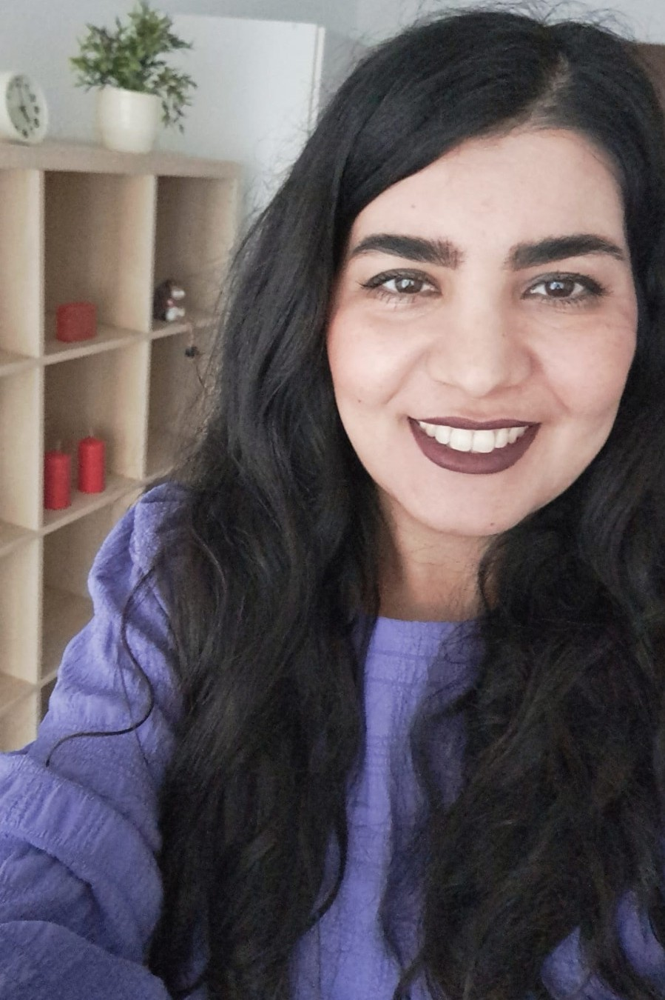

|
Fatemeh Salehi Rizi
Data Scientist
Nagarro, Germany
|

|
|
I am a Data Scientist at Nagarro in Stuttgart, Germany.
Previously, I was a PostDoc scientist at Scads.AI in Leipzig.
My research interests are in Machine Learning, Natural Language Processing and Statistical Modelling. During my PhD at the University of Passau, I worked on graph represenation learning and subsequently sloving graph analysis tasks. I finished my Bachelor and Master studies both in the field of computer science in the beautiful city of Isfahan. Apart from Data Science, I activly work out at Ofit and enjoy cycling in the nature.
|
|
Other Topics
I am originally from
Zarrinshahr, a small clean city with modern and hospital people in Iran.
My lovely sister Elaheh is a talented NLP Data Scientist.
I have visited Barcelona, Zurich, Paris, Lyon, Nice,
Limassol,
Biarritz,
Garda,
Shiraz,
Baneh, and many more.
|
|
My Favorite Quotes
"It is certain that an atom of goodness on the path of faith is never lost."- Rumi
"No my friend, failure is not the end; it is a necessary part of the path." - Jedi Master Eno Cordova
"Humanity is like an ocean; if few drops of the ocean are dirty, the ocean does not become dirty." - Mahatma Gandhi
|
|